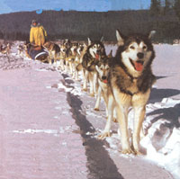
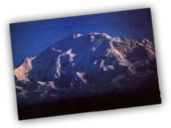
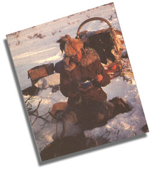
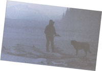
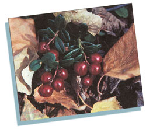
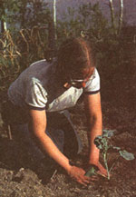
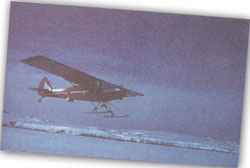
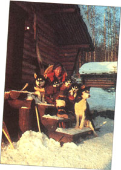
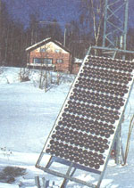

HOMESTEADING
Thirty below four days before Christmas, and I am trudging through drifted snow along an old snowmachine trail that makes a thin, mostly obscured line across three miles of the frozen lake. A heavy snowfall last week weighed the two-foot-thick ice. Despite the bitter cold, water swelled through cracks and holes in the sinking ice, flooding the layers of insulating snow to lie hidden the drifts.
My father follows me slowly with his snow machine as I walk the trail to see if the water buried underneath is deep to wea ken the trail's surface.
If the machine falls through the packed snow into the water flooding over the ice, it will freeze instantly in the slush, accumulating ice until it can't move. By walking ahead, I can watch for this danger, and if the water gets too deep we will go home rather than risk soaking our feet and wrenching our backs trying to extricate the machine in the cold weather.
We don't want to give up, because my brother will be on the weekly mail plane when it lands oil the tiny airstrip across the lake. He is coming for Christmas, and we are trying to make a safe trail so he can cross the lake to the home in which we grew up.
If the machine can't get through, I will try with our dog team. The light wooden dog sled glides easily above most of the slush, and the huskies will go through the water, although they don't like it. My twin sister and partner, Miki, and I usually travel by dog sled instead of snowmachine, but today the dogs are resting. They have pulled our sled more than 650 miles since the fall freeze-up-about 240 miles in the past three weeks-and they have earned their Christmas vacation.
For most of the winter, my sister and I use the dogs to travel along remote trap lines, catching furs, which provide our main income. Usually we set out 60 to 100 miles of trap line, with cabins or tents every 15 or 20 miles, and the dogs make a round trip every week or 10 days. Although slower than snowmachines, the dogs are less likely to break down, are quieter, more versatile, better company, and they do not bog down in overflow.
Now, as my boots sink through the crusted trail into water with a sickening sensation, I wish my dog team was here on the lake instead of the snowmachine. "There's some bad stuff here, I call out. My father guns the machine, guiding it sately across the soggy slush before stopping so we can trade places.
Sitting on the machine, I watch him stepping smartly through the snow despite his 75 years. The white drifts stretch on and oil, ending far away at the lake's shore. Birch-covered hills roll up to the north, while a thin line of black spruce marks the flats south of the lake, flats with ponds, swamps, streams, and muskeg-impossible to travel across in the summer, which is one reason we enjoy the frozen winters.
Although challenging and often strenuous, we enjoy our life in the wilderness. Our home is about 100 miles north of Anchorage, in the middle of the Alaskan Mountain Range. We may not have shopping malls or movie theaters, but nor do we have traffic jams or drug addicts. In some ways, modern conveniences do touch us. A generator provides our electricity; a satellite TV offers entertainment; propane supplements the wood stove and furnace; and airplanes provide a means of transportation in a land without roads. We have radios instead of phones, and runwater in the cabin (after we haul it in barrels from the lake and pump it up to a gravity-flow tank in the attic). In other ways, our life is more primitive. We use an old outhouse instead of a flush toilet. Our heat comes from firewood cut in the forest. And although we can afford to buy conveniences and ship them from town by air, much of our food comes from the land: wild berries, fish, game, and homeraised vegetables from a large garden.
My parents, who moved here in the 1950s, are retired, while Miki and I are self-employed. We sell furs, handicrafts, and free-lance articles and books for money, and we conserve that money by harvesting fuel, food, and other resources from the land. Our endless work follows the endless seasons, the cycle starting anew each spring, when we cut 10 or more cords of birch and spruce for fire-wood. Sometimes as we work, moose come by to browse on the twigs on the downed trees, great long-legged creatures, usually shy and gentle but potentially dangerous, so we skirt the feed piles we have inadvertently made.
In late May when the lake ice melts, we set a fishnet so we don't have to rely as much on store-bought food for the dogs. Later, after the ground thaws, the garden has to be plowed and planted with hardy vegetables, including peas, broccoli, cauliflower, lettuce, onions, cabbage, beans, chard, carrots, radishes, potatoes, and other fast-growing varieties that thrive on the 16 to 18 hours of sunlight that brighten our summer days.
Wild berries ripen in July, and after hours of hot, back-breaking work for many days, we have dozens of gallons to jam and freeze; in September the cranberries ripen, and 10 to 20 gallons of them add to the growing piles of food. Our busy summer days can get repetitive and tedious, but exciting interludes stave off boredom. Wildlife passes through occasionally, and sometimes forest fires rip through nearby stands and the land lies choking under the heavy gray smoke. Flights to Fairbanks, the nearest town, and boat trips to meet the weekly mail plane break the routine.
By fall the harvesting frenzy climaxes as we pull root vegetables, store them immediately and dear the garden. In September we hunt for moose; one bull provides enough meat to last all year. A whitefish run follows in October and November, and as the lake ice thickens we set nets under the ice. Checking the nets in sub-zero weather or high winds can be uncomfortable and difficult, but we can't afford to pass up the chance to freeze 500 or even 1,000 fish to feed our dog teams throughout the winter.
When winter seriously settles in, we have a freezer, pantry, and root cellar stuffed with food, plus frozen fish, firewood, barrels of water stored in the basement, and everything we need to see us through the cold, dark days of winter.
When it's 30 degrees below and you are tiptoeing over snow with treacherous water hidden beneath the trail, as I am today, it's fun to think back on those golden summer days in the berry patches or the garden. To be truthful, though, winter is my favorite season. Despite up to 18 hours of darkness at night, winter is fascinating, with the excitement of dogsledding, the beauty of the snow country, and the challenge of traveling from one camp to another on the trap line.
Of course, this way of life is not without dangers and hazards. Ten years ago I fell through thin ice and couldn't climb out of the freezing water. I would have died if one of my dogs hadn't crept sympathetically to the gaping hole. I grabbed his tail, and he pulled me right out. A few years earlier an airplane crash left me with a slight lameness that crops up when I'm tired. A boating accident in late autumn almost cost Miki her life. Although rarely dangerous, bears occasionally cause problems, and huskies are natural predators, sometimes tangling with wildlife. They once wrapped the sled's towrope around the legs of a young moose, and another time they chased a grizzly bear for two miles down a creek glazed with ice, dragging the sled and the two of us along behind. Just recently they met a grizzly head-on, and when the bear charged the team, Miki had to shoot him.
And of course, water under the trail is a constant danger in the winter. I have gone into waist-high water at -20 degrees, which is not fun. Sometimes a creek on our trail floods with crystal blue water, very deep, very beautiful, and very dangerous.. Usually the water flows slowly, but one night Miki was awakened during the night by a roaring flood that rose to knee-high in five minutes. The raging water consternated the dogs, who knew they had to cross the creek the next day, but luckily most of the water drained away by morning.
Of course, the trouble can be of our own making as we head out for adventure. Most trapping ends in February, and with March weather sunnier and less cold (-30 to 30 degrees), conditions are ideal for a winter camping trip. With eight or 10 dogs pulling our gear in the sled, we travel the wintry sled trails or make our own by snow-shoeing ahead to pack a trail through the snow for the team.
Trail conditions are unpredictable, and we might go five miles or 50 miles in one day, so sometimes we run out of food. We borrow from other mushers in villages, or turn back before our reserves ran out if we are deep in the wilderness. A few times our father or brother rescued us with our bush plane-on-skis, by air-dropping us food, or by landing to pick us up.
Breakup begins in April, and as we head home the dogs struggle in the heat that often soars to 45 degrees. River ice turns black with treacherous rot and creeks break open and flood, sometimes hip-high, as we -wade across them. One year the migrating ducks, geese, and swans beat us home and rose in swirling flocks as we slogged through the loud. Yet the dogs enjoy these trips as much as we do; after months of work on the sang trap lines trails, they love to see new places. Our experienced team powers the sled through water, across mountain ranges, and through deep, feather-soft snow in the dense forests. The lead dogs show cool nerve and intelligence in sizing up obstacles-bad ice, fallen tree,, or 30-foot snowdrifts in the mountain. Often we let them decide what to do, instead of analyzing the problem ourselves, and they either carefully lead the team around the hazard, or barrel through it if they feel it's passable.
In addition to sled dogs, our tough little Icelandic horses provide us with both transportation and entertainment. They, too, have been a source of high adventure. With no roads in this area, they all carne her. overland or by chartered airplane. One horse was approached by a bold grizzly. Later she was trapped in a bog for several hours before being wrenched out. Another horse, despite his tranquilizer, went berserk 1,000 feet in the air when we flew him home. He attempted to exit the windshield and caused several moments of stark terror as Miki and the pilot struggled to force him back out of the cockpit.
One memorable spring we moved three horses, 15 dogs, and 2,000 pounds of food and gear to a remote camp to build a trapping cabin. The horses hauled out logs for the cabin, and took us on some exciting rides along the creek, crossing open water or ice bridges, and jumping up and down knee-high shelves of ice during breakup. On the two-week journey home a black bear approached us, but Miki loudly informed him that "there were many of us, arid all well-armed," so he left. The next day a nearby volcano erupted and layered us with a choking ash, but we made it home all right.
During the winter our horses spend most of their time foraging loose near home. Icelandics are compact, durable little horses that fit well with our lifestyle, especially since they are so "fuel efficient" and also very easy to ride, pack, or break to harness work. They pull sleds loaded with firewood or water, down to -60 degrees. They don't care for overflow, though, and find that glare ice is even more disagreeable, unless they have studs on their feet.
That's why I don't have the horses here today. If the snowmachine can't cross the flooded lake to get my brother home for Christmas, the dog team will be a much better option. After a mercifully short trip that is full of anticipation, we draw near the shore at last, its birch trees bending under heavy loads of snow, and the evergreens up on the hill silhouetted sharply against a powdery white background. The trail stretches straight and clear behind us as we successfully complete the crossing, and the snowy scene adds to the feeling that Christmas will be good this year.
|
 |
 |
 |
|
 |
 |
 |
|
 |
 |
 |